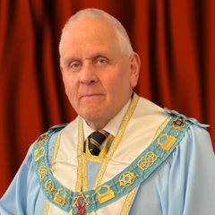

Primer grado · Consistorio
Ostiarius
Narra cómo Rahab ocultó a los espías de Israel en Jericó. Con él, el candidato ingresa en su Consistorio madre y recibe el título de Compañero del Cordón Escarlata.
Antigua Orden Masónica del Cordón Escarlata · Distrito de España

La Antigua Orden Masónica del Cordón Escarlata recorre, a lo largo de seis grados, episodios del Antiguo Testamento que comienzan en tiempos de Josué, con la caída de Jericó y la historia de Rahab, la mujer que salvó a los espías de Israel descolgándolos con un cordón escarlata.
Para ingresar en ella es necesario ser Príncipe cotizante de la Orden del Monitor Secreto: por eso ambas Órdenes caminan juntas y comparten esta web.
La Orden actual desciende de la Real Orden de los Caballeros del Cordón Escarlata, desarrollada en las Islas Británicas en 1889. Sus rituales procedían de documentos del siglo XVIII conservados en los archivos masónicos de Ámsterdam, que el juez Frederick Adolphus Philbrick reescribió y enriqueció para trabajarlos como grados anexos al Monitor Secreto.
Su finalidad principal era reunir fondos para el Fondo Benéfico del Monitor Secreto, que todavía hoy desempeña un papel destacado en la asistencia masónica. Aquella Orden dejó de trabajar en 1929.
En 2001, una ponencia de Peter Glyn Williams, entonces Gran Rector Supremo del Monitor Secreto, despertó de nuevo el interés por aquellos rituales olvidados. En 2006 se consagró un Cónclave con el único propósito de recuperarlos, y el entusiasmo que suscitaron llevó a constituir la Orden como cuerpo soberano el 21 de julio de 2010, en una solemne ceremonia celebrada en el Gran Templo de Freemasons’ Hall, en Londres.
En España, la Orden trabaja a través del Gran Senatus de Distrito de España, que el 26 de septiembre de 2026 instaló en Ciudad Quesada (Alicante) a su nuevo Gran Summus de Distrito.
Los tres primeros grados se confieren en el Consistorio; los tres últimos son rangos avanzados que se otorgan por méritos y servicios a la Orden.
Narra cómo Rahab ocultó a los espías de Israel en Jericó. Con él, el candidato ingresa en su Consistorio madre y recibe el título de Compañero del Cordón Escarlata.
Recorre la historia de Rut, su matrimonio con Booz y el linaje del que nacería el rey David.
Enseña a afrontar la adversidad en las causas justas, inspirándose en la firmeza de los Macabeos frente a la tiranía.
Se concede a los Presidentes instalados, normalmente tras al menos cuatro años de servicio y a propuesta de la Provincia. Evoca el paso del Arca de la Alianza por el Jordán hacia Jericó.
El Gran Summus lo otorga cada año a Grandes Oficiales por su contribución a la Orden. Relata el asedio de Jerusalén por Nabucodonosor y cómo Jeremías ocultó el Arca.
Honor excepcional que el Gran Summus reserva a los miembros de mayor antigüedad y servicio. Profundiza en la lucha de los Macabeos por la independencia de su pueblo.
Antes de ser instalado como Presidente de su Consistorio, el Compañero debe acreditar su dominio de los tres primeros grados en la Ceremonia de Preparación. Desde ese momento es Eminente Compañero y recibe la Patente que le autoriza a ser instalado.
En su Instalación es consagrado como Sumo Sacerdote y Juez y pasa a ser Distinguido Compañero. El cargo de Presidente equivale al de Venerable Maestro en la Logia simbólica. Los rangos más elevados otorgan además los tratamientos de Muy Distinguido e Ilustre Distinguido Compañero.
Gran Summus
M.Dist.Comp. Ian S. Currans
Diputado del Gran Summus
R.Dist.Comp. Francis C. Spencer

Asistente del Gran Summus
R.Dist.Comp. Trevor D. Currans
Gran Summus de Distrito
Luis Alcaina Guzmán
Diputado del Gran Summus de Distrito
Dist.Comp. Rodney Charles Bignell
Asistente del Gran Summus de Distrito
Dist.Comp. Lluís Miguel Moya Noguera
nº 1TI
Levante Scarlet Cord
nº 44TI
Vega Baja Scarlet Cord
nº 50TI
Caballeros de Rahab


Ciudad Quesada (Alicante), 26 de septiembre de 2026.
Si es usted Príncipe del Monitor Secreto y desea ingresar en el Cordón Escarlata, escríbanos a través del formulario de contacto: le pondremos en relación con el Consistorio más cercano.